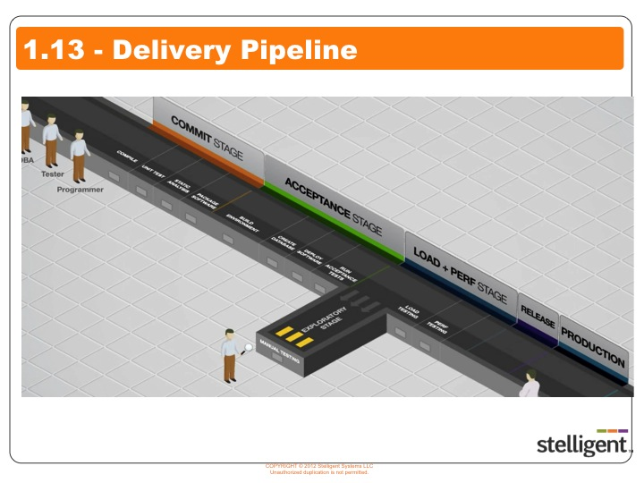
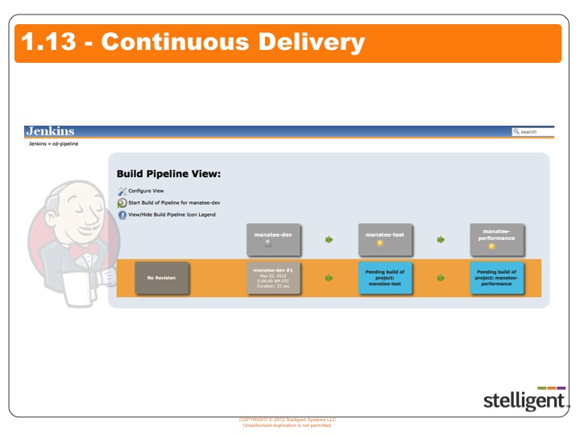

            <div class="container-fluid">
                <div class="row">
                    <div class="col-lg-12 col-xs-12">
                   <!-- Main Body Content -->
                    <h2 class="page-title bg-primary">1.13 View and run jobs within a deployment pipeline</h2>
               <!-- inner body -->
                <div class="inner-body panel">
                    <h4 class="sub-heading">Learning Objectives</h4>
                    <p>By the end of this lesson you will be able to -</p>
                    <ul class="edited-ul">
                        <li>Execute jobs within a deployment pipeline.</li>
                    </ul>
                       </div>  
                     </div>
                     </div>
                 </div>
                <!-- inner body ends here -->
              <!-- container-fluid start here -->
                <div class="container-fluid">        
                    <div class="row">
                        <div class="col-xs-12 col-md-6">
                            <h4 class="bg-info secondary-header">Delivery Pipeline</h4>
                        <div class="text-center">
                            
                        </div>
                    </div>
                    <div class="col-xs-12 col-md-6">
                            <h4 class="bg-info secondary-header">Delivery Pipeline</h4>
                        <div class="text-center">
                            
                        </div>
                    </div>
                </div>
            </div>
            <!-- container-fluid ends here -->
                <!-- container-fluid start here -->
                <div class="container-fluid">        
                    <div class="row">
                        <div class="col-xs-12 col-md-12">
                         <h4 class="bg-info secondary-header">EXERCISE: View and execute a deployment pipeline.</h4> 
                            <div class="inner-body panel">
                                <ul class="ul-listed">
                             <li>Go to the Jenkins dashboard and select the <strong>CDPipeline</strong>.</li>
                              </ul>
                            </div>
                        </div>
               		 </div>
            <!-- container-fluid ends here --> </div>
       <!--  main div box close here--> </div>
    <!-- Page Content Wrapper--> </div>
<!-- /#wrapper -->